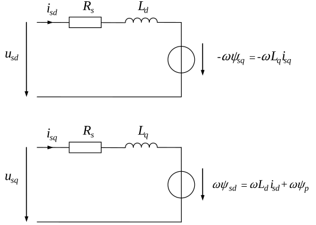

Permanent Magnet Synchronous Motor
Schematic

Electrical ODE
Torque Equation
Code Documentation
- class gym_electric_motor.physical_systems.electric_motors.PermanentMagnetSynchronousMotor(motor_parameter=None, nominal_values=None, limit_values=None, motor_initializer=None)[source]
Bases:
SynchronousMotorAPI for
gym_electric_motor.physical_systems.electric_motors.PermanentMagnetSynchronousMotor.Note
The original docstring is temporarily suppressed due to formatting issues upstream. Once it’s cleaned, we’ll restore the full text here.
API for
gym_electric_motor.physical_systems.electric_motors.PermanentMagnetSynchronousMotor.Note
The original docstring is temporarily suppressed due to formatting issues upstream. Once it’s cleaned, we’ll restore the full text here.
- electrical_jacobian(state, u_in, omega, *args)[source]
API for
gym_electric_motor.physical_systems.electric_motors.PermanentMagnetSynchronousMotor.electrical_jacobian.Note
The original docstring is temporarily suppressed due to formatting issues upstream. Once it’s cleaned, we’ll restore the full text here.
- electrical_ode(state, u_dq, omega, *_)
API for
gym_electric_motor.physical_systems.electric_motors.PermanentMagnetSynchronousMotor.electrical_ode.Note
The original docstring is temporarily suppressed due to formatting issues upstream. Once it’s cleaned, we’ll restore the full text here.
- i_in(state)
API for
gym_electric_motor.physical_systems.electric_motors.PermanentMagnetSynchronousMotor.i_in.Note
The original docstring is temporarily suppressed due to formatting issues upstream. Once it’s cleaned, we’ll restore the full text here.
- initialize(state_space, state_positions, **__)
API for
gym_electric_motor.physical_systems.electric_motors.PermanentMagnetSynchronousMotor.initialize.Note
The original docstring is temporarily suppressed due to formatting issues upstream. Once it’s cleaned, we’ll restore the full text here.
- next_generator()
API for
gym_electric_motor.physical_systems.electric_motors.PermanentMagnetSynchronousMotor.next_generator.Note
The original docstring is temporarily suppressed due to formatting issues upstream. Once it’s cleaned, we’ll restore the full text here.
- static q(quantities, epsilon)
API for
gym_electric_motor.physical_systems.electric_motors.PermanentMagnetSynchronousMotor.q.Note
The original docstring is temporarily suppressed due to formatting issues upstream. Once it’s cleaned, we’ll restore the full text here.
- static q_inv(quantities, epsilon)
API for
gym_electric_motor.physical_systems.electric_motors.PermanentMagnetSynchronousMotor.q_inv.Note
The original docstring is temporarily suppressed due to formatting issues upstream. Once it’s cleaned, we’ll restore the full text here.
- q_inv_me(quantities, epsilon)
API for
gym_electric_motor.physical_systems.electric_motors.PermanentMagnetSynchronousMotor.q_inv_me.Note
The original docstring is temporarily suppressed due to formatting issues upstream. Once it’s cleaned, we’ll restore the full text here.
- q_me(quantities, epsilon)
API for
gym_electric_motor.physical_systems.electric_motors.PermanentMagnetSynchronousMotor.q_me.Note
The original docstring is temporarily suppressed due to formatting issues upstream. Once it’s cleaned, we’ll restore the full text here.
- reset(state_space, state_positions, **__)
API for
gym_electric_motor.physical_systems.electric_motors.PermanentMagnetSynchronousMotor.reset.Note
The original docstring is temporarily suppressed due to formatting issues upstream. Once it’s cleaned, we’ll restore the full text here.
- seed(seed=None)
API for
gym_electric_motor.physical_systems.electric_motors.PermanentMagnetSynchronousMotor.seed.Note
The original docstring is temporarily suppressed due to formatting issues upstream. Once it’s cleaned, we’ll restore the full text here.
- static t_23(quantities)
API for
gym_electric_motor.physical_systems.electric_motors.PermanentMagnetSynchronousMotor.t_23.Note
The original docstring is temporarily suppressed due to formatting issues upstream. Once it’s cleaned, we’ll restore the full text here.
- static t_32(quantities)
API for
gym_electric_motor.physical_systems.electric_motors.PermanentMagnetSynchronousMotor.t_32.Note
The original docstring is temporarily suppressed due to formatting issues upstream. Once it’s cleaned, we’ll restore the full text here.
- torque(currents)[source]
API for
gym_electric_motor.physical_systems.electric_motors.PermanentMagnetSynchronousMotor.torque.Note
The original docstring is temporarily suppressed due to formatting issues upstream. Once it’s cleaned, we’ll restore the full text here.
- CURRENTS = ['i_sd', 'i_sq']
API for
gym_electric_motor.physical_systems.electric_motors.PermanentMagnetSynchronousMotor.CURRENTS.Note
The original docstring is temporarily suppressed due to formatting issues upstream. Once it’s cleaned, we’ll restore the full text here.
- CURRENTS_IDX = [0, 1]
API for
gym_electric_motor.physical_systems.electric_motors.PermanentMagnetSynchronousMotor.CURRENTS_IDX.Note
The original docstring is temporarily suppressed due to formatting issues upstream. Once it’s cleaned, we’ll restore the full text here.
- EPSILON_IDX = 2
- HAS_JACOBIAN = True
API for
gym_electric_motor.physical_systems.electric_motors.PermanentMagnetSynchronousMotor.HAS_JACOBIAN.Note
The original docstring is temporarily suppressed due to formatting issues upstream. Once it’s cleaned, we’ll restore the full text here.
- IO_CURRENTS = ['i_a', 'i_b', 'i_c', 'i_sd', 'i_sq']
- IO_VOLTAGES = ['u_a', 'u_b', 'u_c', 'u_sd', 'u_sq']
- I_SD_IDX = 0
- I_SQ_IDX = 1
- VOLTAGES = ['u_sd', 'u_sq']
API for
gym_electric_motor.physical_systems.electric_motors.PermanentMagnetSynchronousMotor.VOLTAGES.Note
The original docstring is temporarily suppressed due to formatting issues upstream. Once it’s cleaned, we’ll restore the full text here.
- property initial_limits
API for
gym_electric_motor.physical_systems.electric_motors.PermanentMagnetSynchronousMotor.initial_limits.Note
The original docstring is temporarily suppressed due to formatting issues upstream. Once it’s cleaned, we’ll restore the full text here.
- property initializer
API for
gym_electric_motor.physical_systems.electric_motors.PermanentMagnetSynchronousMotor.initializer.Note
The original docstring is temporarily suppressed due to formatting issues upstream. Once it’s cleaned, we’ll restore the full text here.
- property limits
API for
gym_electric_motor.physical_systems.electric_motors.PermanentMagnetSynchronousMotor.limits.Note
The original docstring is temporarily suppressed due to formatting issues upstream. Once it’s cleaned, we’ll restore the full text here.
- property motor_parameter
API for
gym_electric_motor.physical_systems.electric_motors.PermanentMagnetSynchronousMotor.motor_parameter.Note
The original docstring is temporarily suppressed due to formatting issues upstream. Once it’s cleaned, we’ll restore the full text here.
- property nominal_values
API for
gym_electric_motor.physical_systems.electric_motors.PermanentMagnetSynchronousMotor.nominal_values.Note
The original docstring is temporarily suppressed due to formatting issues upstream. Once it’s cleaned, we’ll restore the full text here.
- property random_generator
API for
gym_electric_motor.physical_systems.electric_motors.PermanentMagnetSynchronousMotor.random_generator.Note
The original docstring is temporarily suppressed due to formatting issues upstream. Once it’s cleaned, we’ll restore the full text here.
- property seed_sequence
API for
gym_electric_motor.physical_systems.electric_motors.PermanentMagnetSynchronousMotor.seed_sequence.Note
The original docstring is temporarily suppressed due to formatting issues upstream. Once it’s cleaned, we’ll restore the full text here.